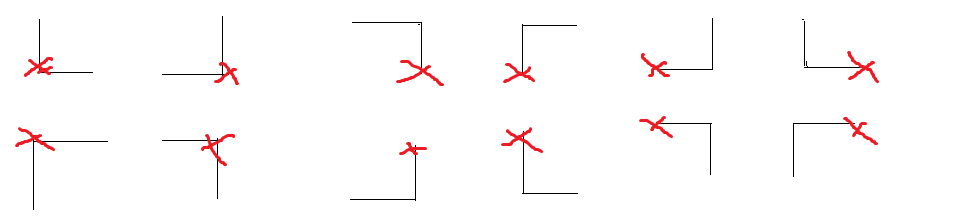

实验题目：实验1
学生姓名：xxx
学生学号：PBxxxxxxxx
完成时间：2023.5.31
h(n) = ⌊n / 3⌋,n为1的个数:
admissible:
显然，h(n) <= h*(n), 因为每次只能翻转3个1，所以最少需要翻转⌊n/3⌋次，所以h(n)是admissible的。
comsistent:
对于任意的n，|h(n + k) - h(n)| <= 1, k = -3, -1, 1, 3,每次L操作，要么增加1个1或3个1，要么减少1个1或3个1，所以h(n)是consistent的。
提供一个可采纳但是不connsistent的启发式函数,使用openlist和closelist将图搜索转为树搜索,能快速找到最优解。
h(n) = sum(⌊每个八连通块的1的个数 / 3⌋) + sum(1的个数)&1 == sum(⌊每个八连通块的1的个数 / 3⌋)&1
admissible:
显然对于当前局面, 进行任意一个通往最优解的L操作(即该L操作里不能是全0的), 该L操作不会跨越两个八连通块, 而每个八连通块至少需要翻转⌊n/3⌋次,这能得出sum(⌊每个八连通块的1的个数 / 3⌋);假如局面上有奇数个1，因为每次L操作，要么增加1个1或3个1，要么减少1个1或3个1，因此需要奇数次操作才能翻转;同理，偶数个1需要偶数步，所以有sum(1的个数)&1 == sum(⌊每个八连通块的1的个数 / 3⌋)&1
commsistent:
反例:
0 0 0 1 0 0 0 1
0 1 0 0 => 0 0 1 0
0 0 0 1 0 1 0 1
1 0 1 0 1 0 1 0
保证h一致性的算法:
将开始局面加入openlist和所有状态集合a，每次从openlist中弹出一个f最小的局面，将其加入closelist。并将其所有的子节点判断是否在a中，如果不在, 加入openlist和a中， 如果在，判断其是否在closelist中，如果在，跳过，如果不在，则在openlist中，判断其f是否更小，如果更小，更新该节点的f和父节点。
仅仅保证h可采纳的算法:
将开始局面加入openlist和所有状态集合a，每次从openlist中弹出一个f最小的局面，将其加入closelist。并将其所有的子节点判断是否在a中，如果不在, 加入openlist和a中， 如果在，判断其是否在closelist中，如果在，判断其f是否更小，如果更小，取出加入openlist里，如果不在，则在openlist中，判断其f是否更小，如果更小，更新该节点的f和父节点。

扩展子节点方法:
12L:
每次扩展遇到的第一个1的12种L的情况，如上图，x为1的位置。因为，每个1至少需要1个L，第一个1也是就这12种L，这12种情况显然包括了通往解的全部情况。
6L:
这是12L的改进，每次只扩展下面6种L。因为，假设第一个1在第k行，则小于等于k - 1行都是0，在这个状态通往最优解的路径上显然不会有小于等于k - 1行的L，因为这些L操作都是全0翻转。因此，对于k行的1上面的k-1行0，只有这一行的1的上面6种L会影响，这些0目前是0，最终状态是0，因此这上面6种L对这上一行0是全部抵消的，所以可以将这6种L向下翻转成下面6种L，因此只用扩展下面6种L。
特殊情况:如果1出现在最后一行，那么扩展上面6种L，因为这时候上面6种L不能向下翻转成下面6种L。
使用6L和h(n) = ⌊n / 3⌋或h(n) = sum(⌊每个八连通块的1的个数 / 3⌋) + sum(1的个数)&1 == sum(⌊每个八连通块的1的个数 / 3⌋)&1
input0:
| 探索节点数 | 扩展节点数 | 运行时间 | |
|---|---|---|---|
| Dijkstra | 228 | 468 | 0ms |
| A* | 87 | 250 | 0ms |
| A*(树) | 53 | 186 | 1ms |
input1:
| 探索节点数 | 扩展节点数 | 运行时间 | |
|---|---|---|---|
| Dijkstra | 32 | 47 | 0ms |
| A* | 26 | 41 | 0ms |
| A*(树) | 20 | 37 | 1ms |
input2:
| 探索节点数 | 扩展节点数 | 运行时间 | |
|---|---|---|---|
| Dijkstra | 155 | 248 | 1ms |
| A* | 28 | 85 | 0ms |
| A*(树) | 32 | 92 | 1ms |
input3:
| 探索节点数 | 扩展节点数 | 运行时间 | |
|---|---|---|---|
| Dijkstra | 806 | 1010 | 1ms |
| A* | 97 | 266 | 0ms |
| A*(树) | 63 | 193 | 1ms |
input4:
| 探索节点数 | 扩展节点数 | 运行时间 | |
|---|---|---|---|
| Dijkstra | 816 | 991 | 2ms |
| A* | 33 | 100 | 0ms |
| A*(树) | 45 | 171 | 1ms |
input5:
| 探索节点数 | 扩展节点数 | 运行时间 | |
|---|---|---|---|
| Dijkstra | 836 | 1036 | 2ms |
| A* | 151 | 419 | 0ms |
| A*(树) | 101 | 323 | 2ms |
input6:
| 探索节点数 | 扩展节点数 | 运行时间 | |
|---|---|---|---|
| Dijkstra | 38408 | 52361 | 57ms |
| A* | 1027 | 3020 | 0ms |
| A*(树) | 573 | 1731 | 6ms |
input7:
| 探索节点数 | 扩展节点数 | 运行时间 | |
|---|---|---|---|
| Dijkstra | 58684 | 68497 | 90ms |
| A* | 2341 | 6487 | 5ms |
| A*(树) | 331 | 1284 | 5ms |
input8:
| 探索节点数 | 扩展节点数 | 运行时间 | |
|---|---|---|---|
| Dijkstra | 167032 | 182863 | 324ms |
| A* | 1716 | 6237 | 4ms |
| A*(树) | 180 | 811 | 3ms |
input9:
| 探索节点数 | 扩展节点数 | 运行时间 | |
|---|---|---|---|
| Dijkstra | 1441836 | 1573373 | 3561ms |
| A* | 99553 | 194536 | 270ms |
| A*(树) | 7881 | 23419 | 95ms |
A*算法大幅减少了探索节点数和扩展节点数，运行时间也大幅减少。其通过启发式函数来排除大量糟糕的路径，最终减少探索节点数和扩展节点数。
A*的树搜索进一步减少了探索节点数和扩展节点数，因为其使用的启发式函数是只要求可采纳的，在扩展节点时，利用closelist手动维护一致性。其h值可以更大，能进一步排除糟糕的路径，在节点数较少时，因为h函数计算的复杂性，A*的树搜索的运行时间比A*的运行时间长一点点，但是随着节点数的增加，A*的树搜索优势越来越大。
变量集合为D*S的工作表，值域集合为{1, 2, ..., N}，对应N个阿姨。约束集合为对应work[i*S + j] == k，即第i天第j个班的阿姨为k,则work[i*S + j - 1] != k, work[i*S + j + 1] != k，即阿姨不能连续上两班;同时sum(work[i*S + j] == k的(i, j)) >= ⌊D * S / N⌋, 即每个阿姨至少上⌊D * S / N⌋班。
非硬性约束:work[i*S + j - 1] = k且people[k].req包括(i, j)，即阿姨k在第i天第j个班上班，且阿姨k自身希望在第i天第j个班上班。该约束要求最大化。
优先安排请求最少的工作，把没有请求的工作放入例外集合中最后处理。
挑好工作后，对于请求这一班的阿姨按照工作量的升序，依次尝试安排(dfs进去), 如果dfs失败，尝试下一个阿姨(dfs进去)。
最后，dfs最深时，所有没有请求的工作按照所有阿姨工作量升序尝试安排，如果失败，回溯，成功则结束。
成功:工作量要求被满足、阿姨无连续排班和所有工作都被安排。
bool dfs(){//深度优先安排
auto W = get_work();//获取请求人数不为0的工作
if(W != works_sort.end()){
work tmp = *W;
works_sort.erase(W);
vector<int>req = tmp.req;
sort(req.begin(), req.end(), [&](int a, int b){
return people[a] < people[b];
});//对于对该工作有请求的人，按照工作数升序排列
for(auto i : req){//按照工作数升序尝试安排
if(arrange(get<0>(tmp.pos), get<1>(tmp.pos), i)){
++max_req;//统计安排的满足请求数
if(dfs()){
return true;
}
else{
not_arrange(get<0>(tmp.pos), get<1>(tmp.pos), i);
--max_req;//撤销安排,减少满足请求数
}
}
}
works_sort.push_back(tmp);//安排失败，将该工作放回works_sort中
sort(works_sort.begin(), works_sort.end());//重新排序,按照请求人数升序排列
return false;
}
else{//当所有请求人数不为0的工作都安排完毕,开始安排请求人数为0的工作
if(zero.empty() && suc.all())//当所有工作都安排完毕,且所有人都满足工作数约束时,返回true
return true;
else{
auto i = *zero.begin();
zero.erase(zero.begin());//对于请求人数为0的工作,优先工作数未满足约束的人
for(int j = 1; j<=N; j++){
if(suc[j] == 0 || suc.all()){
if(arrange(get<0>(i.pos), get<1>(i.pos), j)){
if(dfs()){
return true;
}
else{
not_arrange(get<0>(i.pos), get<1>(i.pos), j);
}
}
}
if(j == N){
zero.push_back(i);//不成功,将该工作放回zero中
return false;
}
}
return suc.all() && max_work == D * S;//当所有人都满足工作数约束,且所有工作都安排完毕时,返回true
}
}
}
1.每次优先挑非0请求且最小请求的工作进行安排。(MRV)
2.对于每个阿姨，按照工作量升序，依次尝试安排(dfs进去), 如果dfs失败，尝试下一个阿姨(dfs进去)。(最大可能满足工作量要求)
3.进行约束传播和前向检验,每次安排都会将这个阿姨不能在上一班或者下一班安排的约束加入对应集合里，同时在get_work时剔除req集合和access(可行阿姨)集合的交集大小为0的work，将其放入zero集合里(req一开始就为0的也放入这里)。
这样，相当于减少了很多不必要的搜索，提高效率，同时，可以保证一定程度的最优性。
std::vector<work>::iterator get_work(){//获取请求人数不为0的工作,按照work_sort的顺序
for(auto it = works_sort.begin(); it != works_sort.end();){
if(it->req.size() != 0){
set<int> tmp{it->req.begin(), it->req.end()};
//交集
set<int> res;
set_intersection(tmp.begin(), tmp.end(), it->access.begin(), it->access.end(), inserter(res, res.begin()));
if(res.size() == 0){//当交集为空时,说明该工作无法安排,将其放入zero表中
zero.push_back(*it);
it = works_sort.erase(it);
continue;
}
return it;
}
else{
zero.push_back(*it);//将请求人数为0的工作放入zero表中
it = works_sort.erase(it);//从works_sort中删除
}
}
return works_sort.end();
}
bool arrange(int i, int j, int people){//给给定位置安排人员,进行约束传播,统计对应人员的工作数,判断是否满足约束
if(works[i*S+j].people == 0 && works[i*S+j].access.find(people) != works[i*S+j].access.end()){//判断是否可以安排,当位置已经安排或者access表中没有该人员时,不能安排
works[i*S+j].people = people;
works[i * S + j - 1].access.erase(people);//约束传播
works[i * S + j + 1].access.erase(people);//约束传播
this->people[people]++;//统计人员工作数
max_work++;
if(this->people[people] >= nums){//判断是否满足工作数约束
suc[people] = 1;
}
return true;
}
return false;
}
1,2,3
2,1,2
3,2,1
3,1,3
1,2,1
3,2,3
1,2,3
20